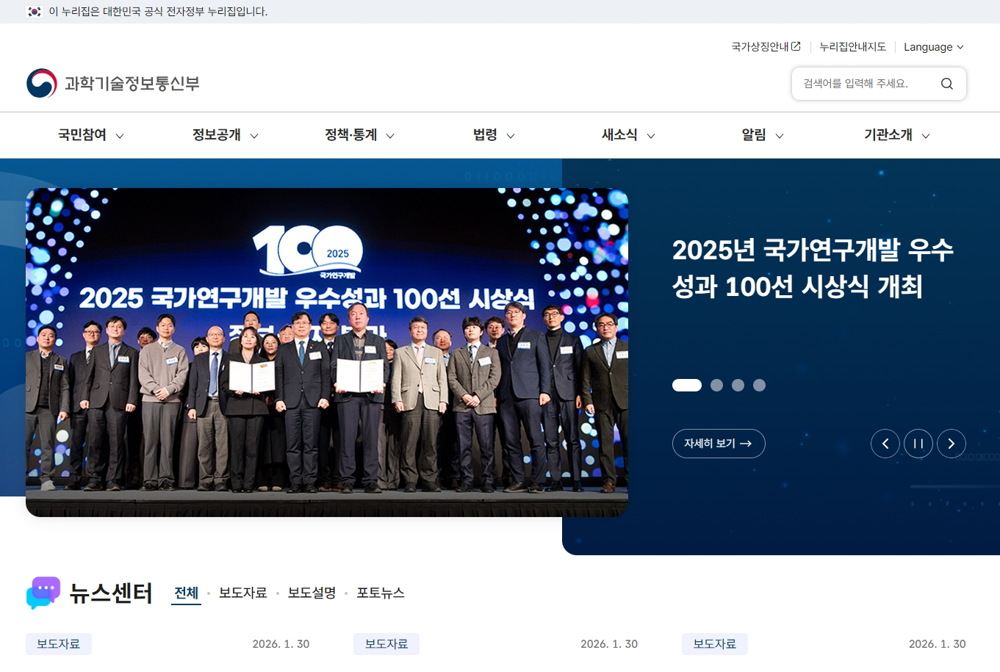
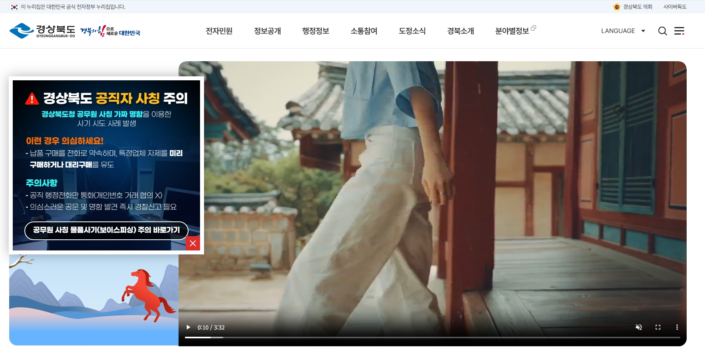
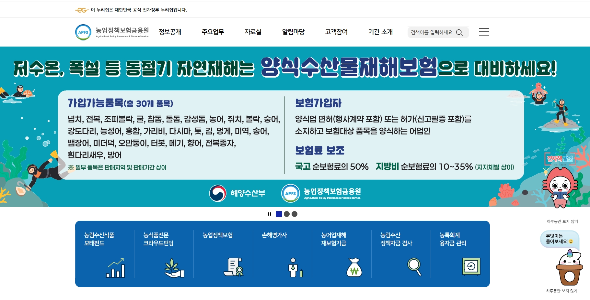
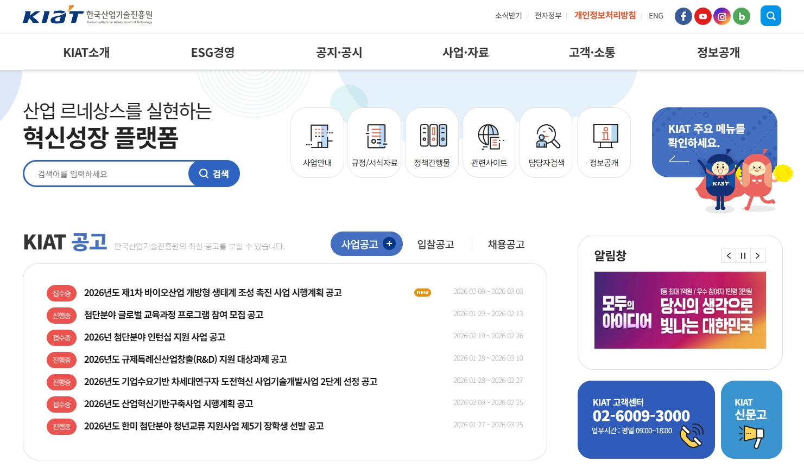
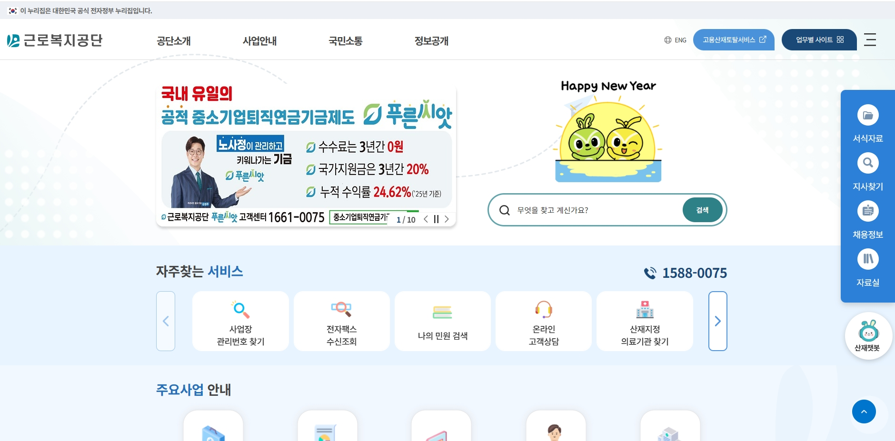
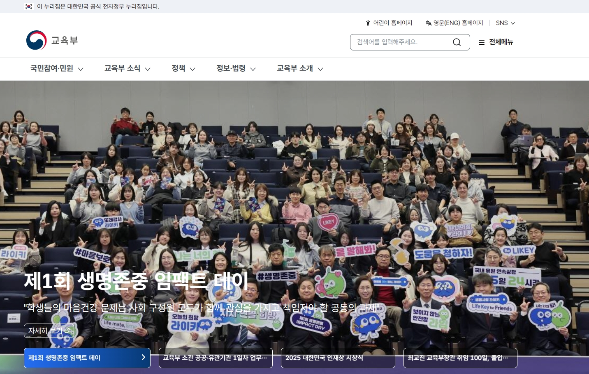
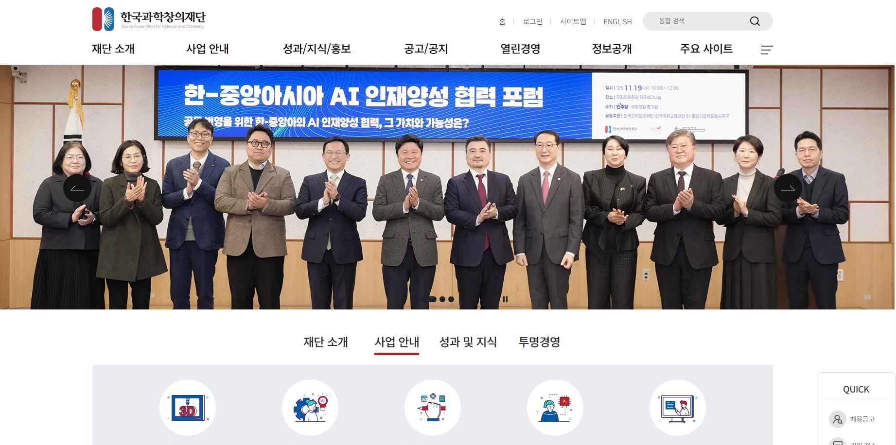
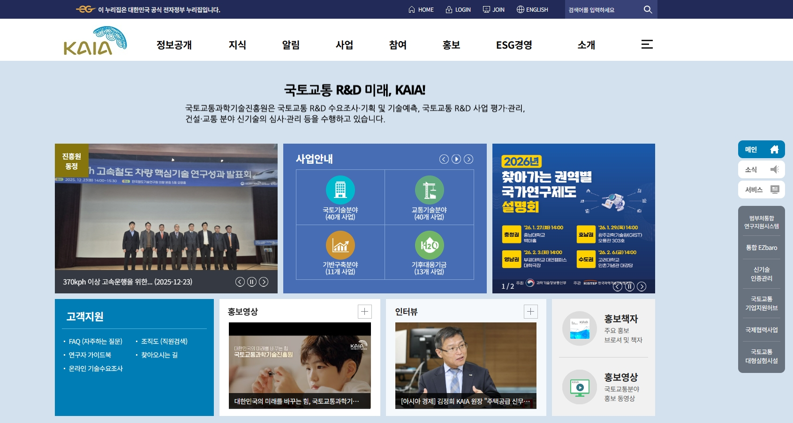
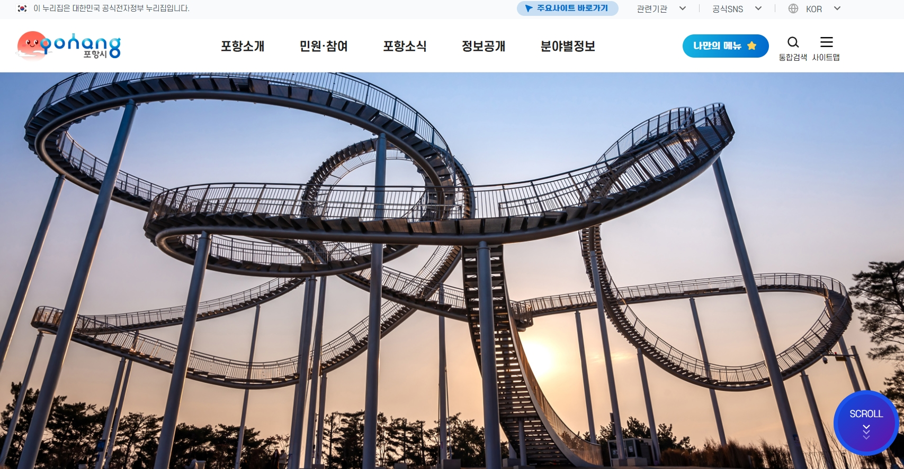

WICC 서비스 실적
웹 접근성, 웹 호환성, 웹 개방성, 웹 편의성, 웹 접속성, 웹신뢰성을 통합적으로 진단하고 개선한 프로젝트 실적입니다.
각 전자정부 웹사이트 품질 지침에 맞는 품질 요소를 개별적으로 관리하는 것보다 통합 관리로 더 효율적이고 비용 효과적인 결과를 달성했습니다.
웹사이트 통합품질 컨설팅 포트폴리오
주요실적











